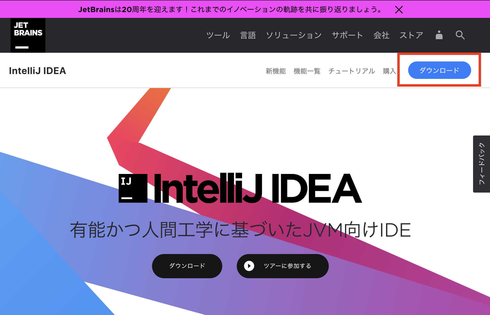
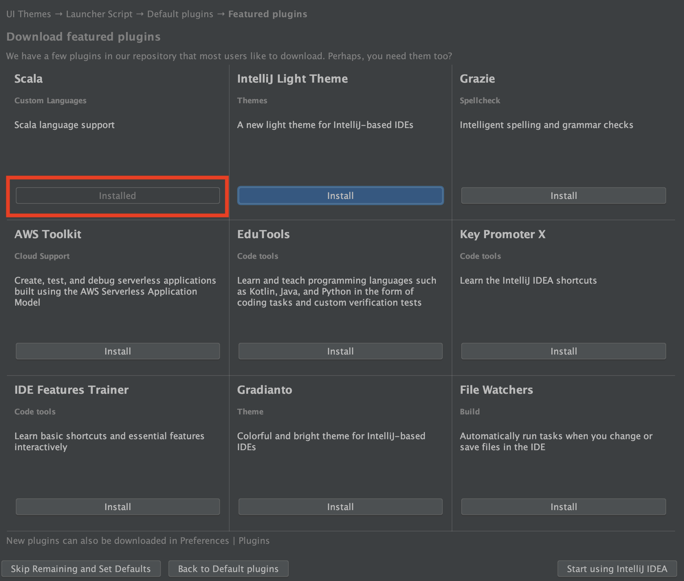
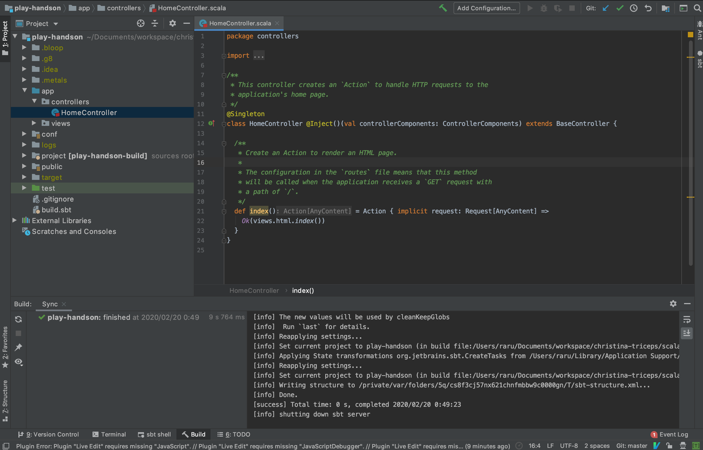
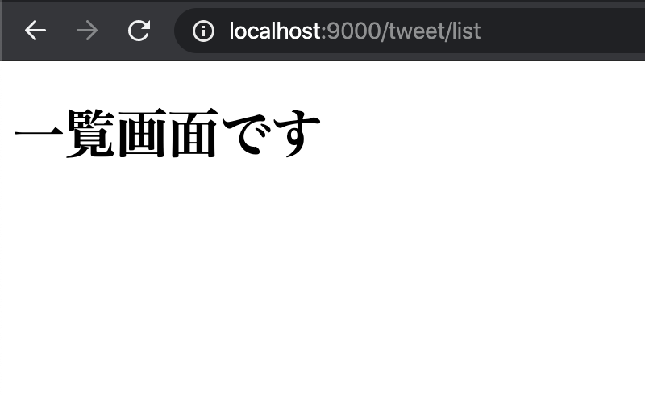
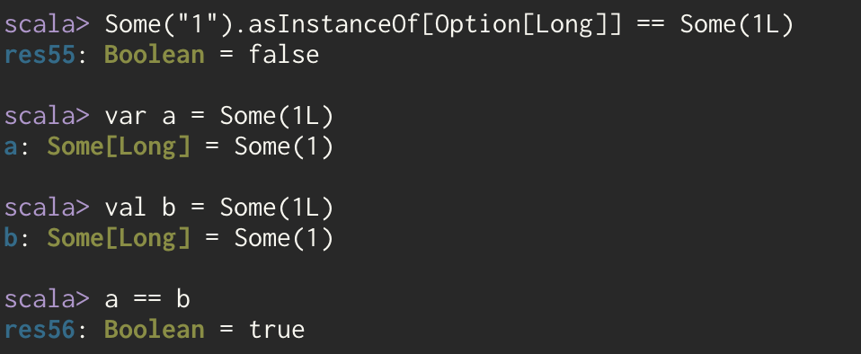
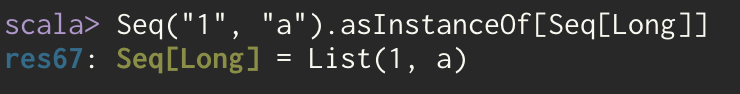

本ハンズオンではTwitterを模倣したシステムを構築しながらPlay Frameworkの使い方を学んでいきます。
Lesson1ではPlayを利用して、簡単なCRUDを作成していきます。
最初はPlayに集中するためにDB接続やその他周辺技術には触れません。
まずはPlay Frameworkをシンプルな状態のまま利用して、Play Frameworkに慣れていきましょう。
またScala-Playで開発を行うにあたり必要となる基本的な知識・言葉については、非常に簡単にではありますが補足していきます。
既にご存知の内容であれば、基本情報のページはスキップしていただいて問題ありません。
SBTとは
SBTはScalaの考案者が創設したLightbend社が作成しているビルドツールです。
ビルドツールというのは自分が書いたプログラムを実際にパソコン上で動作させるために必要な手順を支援してくれるツールです。
sbtを利用するとライブラリの依存関係の解決や、デプロイのためのパッケージング、インクリメンタルなテストやコンパイルの実行を簡単に行うことができるようになります。
scalacコマンドなどを利用してscalaプログラムの実行を行うこともできますが、一般的にはsbtを利用してその上でScalaを利用することが多いと思います。
この後利用しますが、他にもシードからのプロジェクト生成などを行うことなども可能です。
Javaで利用されているAnt, Mavenを利用することも可能ですが、scalaではsbtが利用されることが一般的なのでこちらをお勧めします。
参照: Wikipedia
Play Frameworkとは
元々はJava向けに開発されたWebフレームワークです。
2010年11月にリリースされたPlay 1.1からはScalaをサポートしており、現在広く利用されています。
MVCアーキテクチャに親和性が高く、Webアプリケーション開発に必要な一通りの機能が網羅されています。
ScalaでのWeb開発では採用率が高く参考情報も豊富なため、今回のハンズオンに採用しています。
ちなみにPlay2.3のころから後述のAkkaを統合しています。
[参照]
Play Framework
JetBrains: どのフレームワーク / ライブラリをウェブ開発に定期的に使用していますか？
他のScala WEB Framework
その他の主要なフレームワークについても一部ご紹介しておきます。
- Scalatra
- takezoeさん作成のGitbucketで利用されているフレームワークです
- RubyのフレームワークであるSinatraに影響を受けています
- Skinny Framework
- seratchさんの作成してるフレームワークです
- Ruby on Railsにインスパイアされ作成されています
- Akka)
- Play Frameworkの内部でも利用されているライブラリです
- 公式ではオープソースツールキットおよびランタイムと記載されており、フレームワークではありません
- Sprayの後継として位置付けられていて、Akka○○という形でいくつかのライブラリに分かれています
- Akka httpが一番よく聞きます。これはHttp関連のモジュールです
- Actor modelを採用しています -> Wikipedia
オススメの開発エディタ
- IntelliJ IDEA
- Visual Studio Code & metals
- Vim or Emacs & metals
IDEについてはほぼほぼIntellij IDEAで統一されている印象です。
Community EditionでもScala Pluginを導入すると、個人開発の範囲であればあまり不自由なく開発が行えると思います。
他の選択肢としてMetalsというScala向けのLanguage Serverを利用する方法があります。
最近活発に開発がされており、LSPを利用した連携機能を持つエディタであればかなり快適に開発を行うことも可能です。
VS Codeが有名ですね。
ちなみに私はVimとMetalsを利用して開発を行っています。
個人的には、強いこだわりがない限りはIntelliJ IDEAの利用をオススメします。
IntelliJ IDEAにはScalaのプログラムを「よりScalaらしい」記述にリファクタリングしてくれる機能など、便利な機能が多く用意されているためです。
このページではIntelliJ IDEAとPlayのセットアップを行います。
既に完了されている方はスキップしていただいて問題ありません。
注意事項
本ハンズオンは現在(2020年02月)時点で最新である、Play2.8を利用してハンズオンを進めていきます。
また本ハンズオンは以下を前提として構築されています。
- マシンにsbtがインストールされている
- Mac OSのパソコンを利用している
前提となっている環境と差異がある方は各々読みかえていただいたり、適宜セットアップを行ってください。
sbt インストール方法 Windowsの場合
sbt インストール方法 Macの場合
sbt インストール方法 Linuxの場合
推奨環境
- 1.3系のsbtが導入されている
ハンズオンが作成されている環境がsbt1.3系を利用しているため、これを推奨します。
Playの導入
早速ですがPlayの導入を行っていきます。
sbtのコマンドからPlayのシードプロジェクトを作成してみましょう。
今回は本ハンズオン用のリポジトリを利用する前提で進めます。
任意のプロジェクトディレクトリを作成して、以下のコマンドを実行してください。
あくまで例になりますが、以下にMacでの作業をイメージしてコマンドを記載していきます。
# 参照: https://www.playframework.com/documentation/2.8.x/NewApplication
$ git clone git@github.com:Christina-Inching-Triceps/scala-play_handson.git
$ cd scala-play_handson/lesson1/handson/
$ sbt new playframework/play-scala-seed.g8
# ... 省略
This template generates a Play Scala project
name [play-scala-seed]: play-handson
organization [com.example]: com.example
name部分でプロジェクト名を指定しています。
organizationは個人のドメインをお持ちの方は、その逆順で記載しても良いです。
今回はサンプルのためデフォルトのままの com.exampleを指定しています。
コマンドを実行したフォルダ以下にnameで指定したプロジェクト名のフォルダが作成されます。
└── play-handson
├── app
├── build.sbt
├── conf
├── project
├── public
├── target
└── test
sbt newが完了したら、ローカルでサーバを起動して動作を確認してみましょう。
$ cd play-handson
$ sbt run
# .... 以下の表示がでたらサーバが起動しています。
# --- (Running the application, auto-reloading is enabled) ---
#
# [info] p.c.s.AkkaHttpServer - Listening for HTTP on /0:0:0:0:0:0:0:0:9000
#
# (Server started, use Enter to stop and go back to the console...)
初回起動は関連するライブラリのダウンロードなどが行われるため、時間がかかります。
サーバが起動したら、ブラウザからアクセスをしてみましょう。
http://localhost:9000
以下の画面が表示されていればOKです。
Playの導入はこれで完了になります。
簡単で良いですね。
統合開発環境(IntelliJ IDEA)のセットアップ
今回はIntelliJ IDEA 無償版のセットアップの手順を記載していきます。
IDEAのダウンロード
こちらのサイトからIDEAのダウンロードリンクを押下してください。

各々OSに合わせたダウンロードページへ遷移します。(たぶん)
ダウンロードページに遷移したら、以下のボタンから無償版のIDEAをダウンロードします。
IDEAをインストールできたら、IDEAを起動して次のステップへ進んでください。
IDEAへのプロジェクトの取り込み
まず、IDEAを起動したらOpenからプロジェクトを開いていきましょう。

ファインダーから選択するときには、対象のプロジェクトを反転させてからOpenで問題ありません。
次にIDEAのテーマを選択します。
ここはお好みのテーマを選択してください。

次のステップではshellからIDEAを起動するためにPATHを通すか選択する画面になります。
ここもご自身で自由に設定いただいて問題ありません。

次は好みの設定があるようでしたら変更いただいても問題ありませんが、基本的にはそのままで大丈夫です。

この画面では印がしていあるように、Scalaのインストールだけは必須で行ってください。
他のものについては任意です。

これでIDEAが起動して、プロジェクトが読み込まれます。
またそのときに下の画像のようなポップアップが表示されたらImport Changesを選択しましょう。

このポップアップはsbtに変更が加わったときなどに表示されます。
ここでimport changesを行わないとsbt関連の変更が適用されないのでご注意ください。
Enable Auto-Importをすると自動で設定を更新するようになりますが、sbtの読み込みはマシンパワーを使うことがあるので私は手動が好きです。
ただこれはお好みで選んでいただいて構いません。
また、もし間違って閉じてしまった場合には、以下の赤枠の部分からロードし直すことができます。
では、起動が完了したら試しにapp/controllers/HomeController.scalaのファイルを開いてみましょう。

ソースコード上で、21行目のActionにCmdキーを押しながらカーソルを移動してみてください。
マウスが当たったときにカーソルが指マークに変わるとおもいます。
そこでクリックをしてみましょう。
Actionの実装に飛ぶことができれば設定は正常にされている状態になっています。
うまく動作しないときはJDKのインストールとScalaの設定ができていないときがあります。
そのときは声をかけてください。
これでIDEAの設定は完了になります。
この章からCRUD機能の開発を進めていきます。
開発に入る前に、Playのフォルダ構成とその中からよく利用する主なファイルについて簡単に説明します。
.
├── app
│ ├── controllers
│ │ └─ HomeController.scala
│ └── views
│ ├── error
│ ├── index.scala.html
│ ├── main.scala.html
│ └── main.scala.html
├── build.sbt
├── conf
│ ├── application.conf
│ ├── logback.xml
│ ├── messages
│ └── routes
├── logs
│ └── application.log
├── project
│ ├── build.properties
│ └── plugins.sbt
├── public
│ ├── images
│ ├── javascripts
│ └── stylesheets
├── target
└── test
appフォルダ
アプリケーションのプログラムファイルはapp以下に配置していきます。
サーバサイドのプログラム以外に、画面表示のためのviewsもこのapp以下に配置されていますね。
viewsは名前の通り画面側の実装を配置するのですが、PlayFrameworkではtwirlというscalaとhtmlの混ざったViewテンプレートを利用します。
confフォルダ
confには設定関連のファイルが配置されています。
application.confはメインの設定ファイルで、システムから利用する設定情報などを記載します。
細かく管理するためにファイル分割を行うことも可能ですが、システムを制御するための設定情報はこのファイルに記載していきましょう。
今後一番利用することになる設定ファイルなので覚えおいてください。
logback.xmlはログ出力フォーマットや出力条件などを設定するもので、Playで採用されているlogbackというライブラリのための設定ファイルになります。
Play独自のものではないため、本ハンズオンでは詳細には取り扱いません。
気になる方はlogbackというワードで調べてみると、細かい設定方法が確認できます。
messagesは多言語対応や、メッセージ管理用の設定でバリデーションメッセージなど各メッセージの管理に利用できます。
本ハンズオンでも基本的な使い方を取り扱っているので、利用方法はその際に紹介します。
routesはルーティング情報を記載するファイルです。こちらも分割して管理することなども可能です。
システムから利用される際には、このファイルの情報がコンパイルされたClassファイルが利用されるようになっています。
sbt関連
build.sbtはプロジェクトのビルド設定ファイルです。
ビルドするための依存ライブラリを記述したり、デプロイ設定を記載したりします。
またsbt shellにコマンドを追加するときにも、このファイルに追加を行っていきます。
project以下にもsbt系の設定ファイルを切り出して配置します。
ここで定義したものをbuild.sbtで読み込んで利用することなどが多いです。
例えばbuild.sbtに記載する情報のうち依存関係に関連するものをDependencies.sbtとして切り出して、build.sbtにimportする、という使い方もできます。
他にはscalafmtなどのプラグインをplugins.sbtに追加して利用できるようにしたりすることが多いです。
それではPlayの機能を触りながら一覧ページから作成していきましょう。
前述の通り、今回はPlayに集中するためDBへのアクセスは行わずに機能を作成していきます。
ルーティング
まずはリクエストに対する処理の設定をみていきます。
先述の通り、Playではconf/routesのファイルでルーティングを管理しています。
今の状態のconf/routesファイルを開いてみると、以下のようになっています。
conf/routes
# ... 一部抜粋
# An example controller showing a sample home page
GET / controllers.HomeController.index
これはGETMethodの/へのリクエストに対してcontrollers.HomeController.indexを設定するという設定になります。
この設定のおかげで、Playはhttp://localhost:9000に対して/でリクエストを受け取り、HomeControllerのindexアクションを実行するということを理解できるようになります。
今回は一覧表示機能を作成したいので、以下のようにルーティングを設定してみましょう。
conf/routes
GET /tweet/list controllers.tweet.TweetController.list
今回は意図的にtweetというパッケージを間に挟んでいます。
よくあるサンプルでは独自にパッケージを追加したものがほとんどないためです。
次は設定したルーティングに必要なコントローラーを作成してきましょう。
Controllerの作成
Playではapp/controllers以下にControllerクラスを作成し、リクエストに対する処理を実装していきます。
余談ですが、Controllerにあるリクエストに対するメソッドは、一般的にアクションと呼ばれますので覚えておくと良いでしょう。(他のプログラミング言語、フレームワークでも同様です)
今回も慣習に合わせてapp/controllersにファイルを作成していきます。
先ほどroutesファイルに記載した設定に合わせて、app/controllers/tweet/TweetController.scalaを作成し、その中にlistアクションを実装していきます。
app/controller/tweet/TweetController.scala
package controllers.tweet
import javax.inject.{Inject, Singleton}
import play.api.mvc.ControllerComponents
import play.api.mvc.BaseController
import play.api.mvc.Request
import play.api.mvc.AnyContent
/**
* @SingletonでPlayFrameworkの管理下でSingletonオブジェクトとして本クラスを扱う指定をする
* @Injectでconstructorの引数をDIする
* BaseControllerにはprotected の controllerComponentsが存在するため、そこに代入される。
*/
@Singleton
class TweetController @Inject()(val controllerComponents: ControllerComponents) extends BaseController {
// BaseControllerにActionメソッドが定義されているため、Actionがコールできる
// このActionにcontrollerComponentsが利用されているためInject部分でDIされている
def list() = Action { implicit request: Request[AnyContent] =>
// Ok()はステータスコードが200な、Resultをreturnします。
// つまり正常系としてviews.html.tweet.listのコンテンツを返すということになります。
Ok(views.html.tweet.list())
}
}
プログラム内にコメントで各実装の説明を記載していますが、少し難しい部分も多いためよくわからない部分は慣れるまでは深追いしなくても大丈夫です。
今回覚えておきたいのは以下の部分です。
def list() = Action { implicit request: Request[AnyContent] =>
Ok(views.html.tweet.list())
}
まずAction { ... の部分は言語として用意された構文ではありません。
正確ではありませんが、イメージとしてはAction(request: Request => { block }) というメソッドの呼び出しになります。
この{ block }の部分が{ implicit request: Request[AnyContent] => ... }以後に記載されているプログラム全体です。
今回の場合には以下の部分がブロック内の実装になっていますね。
Ok(views.html.tweet.list())
この部分はHTTPステータスコードの200 OKをreturnしつつ、レスポンスとしてviews.html.tweet.listの画面を返すという意味になります。200 OKにあたるのがOk()というメソッドのような部分です。
これ以外にもRedirect()やNotFound()などがあり、それぞれが名前の示すステータスコードに紐づいています。
これでhttp://localhost:9000/listのリクエストに対してのアクションを作成できました。
一度プログラムをコンパイルしてみましょう。
コンパイルはターミナルから、以下のコマンドを実行することで行えます。
$ sbt compile
# sbt ~compileとするとファイル変更を検知するたびに自動ビルドされます。お好みで使い分けてください。
まだエラーになってしまっていますね。
それはこのリクエストに対するレスポンスに指定しているviews.html.tweet.listのファイルが存在しないからです。
次は一覧画面のためのhtmlを作成していきましょう。
画面の作成
PlayのデフォルトではTwirlというテンプレートエンジンを利用して画面を作成します。
Twirlのファイルはapp/views/以下に配置されており、拡張子が.scala.htmlとなっています。
今回はviews/tweet/list.scala.htmlを作成していきます。
view以下のフォルダ構成は先ほどのOk(views.html.tweet.list())の指定とマッピングされています。
今回のviews.html.tweet.list()の場合はviews/tweet/list.scala.htmlですね。
この紐付き解決は以下のような形になっています。views.html => views/tweet.list() => tweet/list.scala.html
では、ファイルを作成して、まずは以下のように中身を実装していきましょう。
app/views/tweet/list.scala.html
@* これはTwirlのコメントです。
以下はview templeteでの引数を受け取る記載です。
今回は引数が不要のため @() となっています。
*@
@()
@main("一覧画面") {
<h1>一覧画面です</h1>
}
@mainの部分については後ほど説明をしますので、今は「h1の表示を出すんだな」くらいの理解で問題ありません。
ここまで出来たら、一度ページへアクセスして動作を確認してみましょう。 以下のような画面が表示されればOKです。
http://localhost:9000/tweet/list

モデルの作成とリスト表示
単純なページ表示は行えたので、次はモデルを作成してそのモデルを一覧表示してみます。
モデルの作成
今回利用するTweetモデルを作成していきます。
モデルを配置する場所などは任意に設定できますが、今回はapp以下にmodelsフォルダを作成して進めてみます。
app/models/Tweet.scala
package models
// case classについての説明は省略
// 参考: https://docs.scala-lang.org/ja/tour/case-classes.html
case class Tweet(
id: Option[Long],
content: String
)
非常にシンプルなクラスになりました。case classについての説明は省略しますが、非常に雑に説明するとtoString, equalsがいい感じに実装されていたりする便利なClassです。
モデルをViewへ渡す
先ほど作成したControllerを修正して、モデルをコントローラからViewへ渡してみましょう。
app/controllers/tweet/TweetController.scala
def list() = Action { implicit request: Request[AnyContent] =>
// 1から10までのTweetクラスのインタンスを作成しています。
// 1 to 10だとIntになってしまうので1L to 10LでLongにしています。
val tweets: Seq[Tweet] = (1L to 10L).map(i => Tweet(Some(i), s"test tweet${i.toString}"))
// viewの引数としてtweetsを渡します。
Ok(views.html.tweet.list(tweets))
}
今回はDBを利用しないので、Controller側に決め打ちでモデルのインスタンスを実装しています。views.html.tweet.list()に引数としてtweetsを渡しているところにも注目してください。
Controllerからviewへモデルを渡せたので、次はView側で引き渡されたTweetを受け取って表示をしてみます。
Viewでモデルを受け取り表示
早速コードを修正していきましょう。
app/views/tweet/list.scala.html
@*
以下はview templeteでの引数を受け取る記載です。
今回はTweetの一覧を取得するため@(tweets: Seq[Tweet]) となっています。
*@
@(tweets: Seq[Tweet])
@main("一覧画面") {
<h1>一覧画面です</h1>
<ul>
@* Twirlでのfor記法です。forと(の間にスペースを入れると動かないので注意してください *1 *@
@for(tweet <- tweets) {
<li>@tweet.content</li>
}
</ul>
}
修正内容はプログラム上のコメントの通りになりますが、新しく引数の受け取り、受け取ったインスタンの出力を追加してあります。
Twirlの記法についてはこちらを参考にしてください。
これで一覧表示の実装は完了です。
ブラウザから動作を確認してみましょう。
http://localhost:9000/tweet/list
以下のように表示されていればOKです。

ちなみに、以下が*1注釈にあるスペースを入れた場合のエラーです
一覧が作成できたので、次は詳細ページを作成していきます。
データがコンテンツくらいしかないので寂しいページにはなりますが、復習もかねて一覧ページを作成したのと同じように実装を進めていきます。
ルーティングの作成
詳細ページはどのデータの詳細情報を表示するか判断するための情報が必要になります。
今回はモデルにあるIDでデータを特定するように実装を進めます。
以下のようにroutesファイルにルーティングを追加してください。
conf/routes
GET / controllers.HomeController.index
GET /tweet/list controllers.tweet.TweetController.list
# 追加
GET /tweet/:id controllers.tweet.TweetController.show(id: Long)
/tweet/:idという記載がでてきました。
ここでは:id箇所のデータをパラメータとして受け取っています。
例えばhttp://localhost:9000/tweet/1のときTweetControllerのshowメソッドに1が引数として渡されます。
またパラメータ受け取りは今回のようなURL文字列からの取得以外にも、通常通りのQueryStringからの取得も可能です。
例えば以下のようなroutesがあったとします。
GET /tweet/detail controllers.tweet.TweetController.show(id: Long)
このときhttp://localhost:9000/tweet/detail?id=1のようなURLであれば、showに1が渡されます。
アクションとViewの追加
ルーティングが追加できたので、そこに紐づくアクションとViewを追加してきます。
app/controllers/tweet/TweetController.scala
@Singleton
class TweetController @Inject()(val controllerComponents: ControllerComponents) extends BaseController {
// DBのMockとして利用したいので、先ほどlistに作成したインスタンスをフィールドとして定義し直す
val tweets: Seq[Tweet] = (1L to 10L).map(i => Tweet(Some(i), s"test tweet${i.toString}"))
def list() = Action { implicit request: Request[AnyContent] =>
// フィールドに変数を移したので、ここでの変数定義を削除
Ok(views.html.tweet.list(tweets.toSeq))
}
def show(id: Long) = Action { implicit request: Request[AnyContent] =>
Ok(views.html.tweet.show(
// tweetsの一覧からIDが一致するものを一つ取得して返す
// getは良くない書き方なため、後のセクションで修正する
tweets.find(_.id.get == id).get
))
}
}
まずtweetsをクラスのフィールドとして定義し直しています。
これはDBなしでデータを一定期間保持しておくための実装です。
showメソッドの中でOption型を直接getしていますが、これはnullに対して安全な処理ができるメリットを捨ててしまうことになるため、後ほど修正していきます。
views/tweet/show.scala.html
@(tweet: Tweet)
@main("詳細画面") {
<h1>詳細画面です</h1>
<div id="detail">
<div>id: @tweet.id</div>
<div>content: @tweet.content</div>
</div>
}
Twirlについてはlistページとほとんど同じですね。
ここまでできたら、以下のURLにアクセスして画面が正常に表示できるか確認してみましょう。
http://localhost:9000/tweet/1
以下のように表示されていればOKです。
一覧からのリンク作成
詳細ページが完成したので、次は先きほど作成した一覧ページからリンクを通してみます。
views/tweet/list.scala.html
@(tweets: Seq[Tweet])
@main("一覧画面") {
<h1>一覧画面です</h1>
<ul>
@for(tweet <- tweets) {
<li>
@* よくウェブ上で @routes.HomeController.index のようなものをみるがこれはtwirlではデフォルトでcontrollers.routesがインポートされているためcontroller部分が省略されているだけ。*@
<a href="@controllers.tweet.routes.TweetController.show(tweet.id.getOrElse(0))">@tweet.content</a>
</li>
}
</ul>
}
href="@controllers.tweet.routes.TweetController.show(tweet.id.getOrElse(0))"の部分では、routesファイルの設定からURLを作成するようにしてあります。
書き方は{Controllerのパッケー}.routes.{Controller名}となります。
コメントにも記載していますが、ウェブ上で良くみる@routesから始まる書き方は、Playがデフォルトでcontrollers.routesをインポートしているために{controllers}が省略されたものです。
ここを理解していないと独自でパッケージを切ったりしていく時に非常に苦労することになるので、頭の隅に残しておきましょう。
では、最後に動作確認です。
http://localhost:9000/tweet/list
以下のようにリンクが表示され、リンククリックで詳細ページが表示されたら完了です。

エラーページ作成
先ほど省略したエラーページの表示を行います。
まずは実装からみてみましょう。
app/controllers/tweet/TweetController.scala
def show(id: Long) = Action { implicit request: Request[AnyContent] =>
// idが存在して、値が一致する場合にfindが成立
tweets.find(_.id.exists(_ == id)) match {
case Some(tweet) => Ok(views.html.tweet.show(tweet))
// status codeを404にしつつページを返しています。
case None => NotFound(views.html.error.page404())
}
}
この実装では元々getをしてしまっていた部分についても、改善するようにしています。
tweetのidがURLから受け取ったidと一致するものをfindしています。existsはNone.existsの場合に常にfalseになります。
今回はデータのない場合の表示なのでstatusとして404(NotFound)を指定しています。
Ok, NotFoundは同じクラスなので同様の使い方が可能です。
次にNotFoundで指定してるページを作成します。
app/views/error/page404.scala.html
@()
@main("ページが見つかりません") {
<h1>ページが見つかりません。</h1>
}
ここまでできたら動作を確認してみましょう。
この状態で存在しないTweetを参照しようとすると以下のようになります。
http://localhost:9000/tweet/1111

ステータスコードが404で、作成したページが表示されていることが確認できますね。
エラーページを作成する方法は以上です。
HomeControllerから一覧へリダイレクト
ここまでできたら/ページへのアクセスを一覧ページリダイレクトしてみましょう。
app/controllers/HomeController.scala
package controllers
import javax.inject._
import play.api._
import play.api.mvc._
@Singleton
class HomeController @Inject()(val controllerComponents: ControllerComponents) extends BaseController {
def index() = Action { implicit request: Request[AnyContent] =>
Redirect(tweet.routes.TweetController.list())
}
}
ここでは自分自身がcontrollersパッケージにいるので、リバースルーティングはその先にあるパッケージからの記載になります。
今回は controllers.tweet.routes.... を呼び出したいので tweet.routes... で動作します。
これでリダイレクトの設定は完了です。
こういうところでハマりやすいのですよね。私はハマりました。
次は登録機能を作成していきます。
例によってconf, controllerと修正していきましょう。
登録処理は今までの機能とは違い、画面からformの値を受け取るという動作があります。
Formはよく利用する機能なので登録・更新と処理を書く中で少しずつ慣れていきましょう。
ルーティングの追加
conf/routes
GET / controllers.HomeController.index
GET /tweet/list controllers.tweet.TweetController.list
GET /tweet/:id controllers.tweet.TweetController.show(id: Long)
# 下の2つを追加
GET /tweet/store controllers.tweet.TweetController.register
# actionがないとエラーになるので一旦コメントアウト
# POST /tweet/store controllers.tweet.TweetController.store
今回は/tweet/storeというルーティングをget, postのそれぞれで追加しています。
これは登録用画面の表示と、実際に登録処理を行うアクションで2つのアクションが必要になるためです。
またルーティングは追加してみましたが、実はこのルーティングは正常に動作しません。
理由は/tweet/:idの設定の方が上位に書かれているからです。
playのルーティングは先勝ちになっているようで/tweet/storeにアクセスしようとすると:idの部分にstoreが取られてしまいます。
これを回避するには2つの方法があります。
/tweet/:idが数値のみをとるように変更する- storeのルーティングを上にあげる
基本的には1の方が良いので、ここでは1の方法で修正してみます。
conf/routes
GET /tweet/$id<[0-9]+> controllers.tweet.TweetController.show(id: Long)
これでshowのルーティングでは0-9の数字しか受け付けなくなりました。
登録用画面の実装
続いてコントローラを修正していきますが、今回はアクションの追加のみではなくFormオブジェクトの設定も行なっていきます。
Formの追加
まずFormオブジェクトの追加を行っていきます。
Formオブジェクトを利用することでPOSTでの値受け取りをフレームワーク側に移譲しつつ、バリデーションなどの処理を簡単に適用することができます。
習うよりコードを見た方が早いと思うので、早速コードをみてみましょう。
Formはいくつかの書き方が出来るので複数の書き方を記載していますが、結論パターン2の書き方で実装を進めていきます。。
// パターン2用のcase class
case class TweetFormData(content: String)
class TweetController @Inject()(val controllerComponents: ControllerComponents) extends BaseController {
// ...省略
// パターン1: 既存クラスを使いまわして、apply, unapplyを自前で書くパターン
val form1: From[Tweet] = Form(
// html formのnameがcontentのものを140文字以下の必須文字列に設定する
mapping(
"content" -> nonEmptyText(maxLength = 140)
)
// apply, unapplyを自分で書いているパターン
((content: String) => Tweet(None, content))
((v: Tweet) => Some(v.content))
)
// パターン2: Form用にcase classを作成するパターン(推奨)
val form2: From[Tweet] = Form(
mapping(
"content" -> nonEmptyText(maxLength = 140)
)(TweetFormData.apply)(TweetFormData.unapply)
)
// パターン3: tuple, singleを利用するパターン
// 受けとるデータが単数なのでsingleとしていますが、複数の場合にはtuple()になります。
val form3 = Form(
single(
"content" -> nonEmptyText(maxLength = 140)
)
)
// ...省略
}
single, tupleとmappingの使い分けは、Formから受け取った値をクラスにマッピングしたいときにはmapping
そのまま利用したいときにはsingle, tupleを利用する、なります。
デフォルトで利用できるバリデータは他にもemail, number, booleanなどがあります。
Formの使い方の詳細は以下の公式ドキュメントを参照してください。
参照: Form submission and validation
今回利用するフォームがオブジェクトができたので、次はルーティングに対応するアクションを追加していきましょう。
画面表示用アクションの追加
まずは簡単な登録画面表示のアクションから作成していきます。
app/controllers/tweet/TweetController.scala
// controllersクラスの外に記載
case class TweetFormData(content: String)
// ...省略: フィールド
val form = Form(
// html formのnameがcontentのものを140文字以下の必須文字列に設定する
mapping(
"content" -> nonEmptyText(maxLength = 140)
)(TweetFormData.apply)(TweetFormData.unapply)
)
def register() = Action { implicit request: Request[AnyContent] =>
Ok(views.html.tweet.store(form))
}
// コンパイルエラー回避用に何もしない登録用のstoreメソッドも作成
def store() = Action { implicit request: Request[AnyContent] =>
NoContent
}
シンプルですね。
ここで先ほど作成したformを画面へ渡しています。
先ほどの実装ではフォームをいくつか作成していましたが、ここではform2のみを残してformにリネームしています。
viewの作成
アクションが作成できたのでViewを追加します。
今までのViewを参考にしつつ、以下のようにファイルを作成していきましょう。
views/tweet/store.scala.html
@import controllers.tweet.TweetFormData
@(form: Form[TweetFormData])
@main("登録画面") {
<h1>登録画面です</h1>
@helper.form(action = controllers.tweet.routes.TweetController.store()) {
@helper.inputText(form("content"))
<input type="submit" value="登録">
}
}
今回新しく@helperというパッケージを利用しています。
ここにはFormを利用するためのヘルパー関数がいくつも用意されています。
importに@import helper._を追加して利用するのも一般的です。
ここまで出来たら、一度コンパイルしてみましょう。
そうすると以下のようにエラーになると思います。
$ sbt compile
An implicit MessagesProvider instance was not found. Please see https://www.playframework.com/documentation/latest/ScalaForms#Passing-MessagesProvider-to-Form-Helpers
[error] @helper.inputText(form("content"))
[error] ^
[error] one error found
[error] (Compile / compileIncremental) Compilation failed
[error] Total time: 0 s, completed 2020/02/24 21:37:20
これはinputTextが暗黙の引数としてmessagesProviderのインスタンスを必要としているために発生します。
何をヒントに修正していけばいいのかは、エラーメッセージの中に書かれていますね。
Passing-MessagesProvider-to-Form-Helpers
implicitが出てくると非常に難しく感じてしまいますよね。
最初は「直接手で引数を渡すと面倒くさいから自動で渡すようにしているんだな」くらいの理解で良いと思います。
エラー修正のため、messagesProviderをviewへ渡していきます。
@import controllers.tweet.TweetFormData
@* 以下の引数ブロックにimplicit用の引数を追加 *@
@(form: Form[TweetFormData])(implicit messageProvider: MessagesProvider)
@main("登録画面") {
<h1>登録画面です</h1>
@helper.form(action = controllers.tweet.routes.TweetController.store()) {
@helper.inputText(form("content"))
<input type="submit" value="登録">
}
}
この状態でもう一度コンパイルをしてみると、どうでしょう。
$ sbt compile
An implicit MessagesProvider instance was not found. Please see https://www.playframework.com/documentation/latest/ScalaForms#Passing-MessagesProvider-to-Form-Helpers
[error] Ok(views.html.tweet.store(form))
[error] ^
[error] one error found
[error] (Compile / compileIncremental) Compilation failed
先ほどと同様のエラーですが、エラーが出る箇所がコントローラまで上ってきています。
というわけで、次はコントローラを修正してあげる必要があります。
修正方法はエラーメッセージの中にあるPlease seeのリンク先を見ればわかるようになっていますね。

こちらを参考にコントローラを直してみましょう。
app/controllers/tweet/TweetController.scala
class TweetController @Inject()(val controllerComponents: ControllerComponents)
extends BaseController with I18nSupport {
with句で新しくI18nSupportをmixinしています。
Scalaでは2つ目以降の継承, mixinはwithで記載します。
これでコンパイルをするとエラーが解決されているのが確認できるはずです。
$ sbt compile
[success] Total time: 0 s, completed 2020/02/24 22:09:40
ここまで出来たら、一度登録画面を表示してみましょう。
http://localhost:9000/tweet/store
以下のように画面が表示されていればOKです。

ちょっと不格好ですが、この辺りは後ほど修正していきます。
少し長丁場になっていますが、次は登録処理を作成していきましょう。
登録処理の実装
登録処理の実装は今までのアクションと比べて少し複雑になります。
具体的には画面から受け取ったフォームデータの利用や、入力ミスがあった場合の元画面でのエラー表示などがあります。
tweetsのSeqをmutable化
tweetのインスタンスデータを保持しつつ、可変な状態にするためにtweetsフィールドを可変配列に置き換えていきます。
Scalaではimmutableなオブジェクトやリストを利用するのが基本のため、あくまでサンプルのための実装になります。
app/controllers/tweet/TweetController.scala
class TweetController @Inject()(val controllerComponents: ControllerComponents) extends BaseController with I18nSupport {
// DBのMockとして利用したいので、mutableなクラスのフィールドとして定義し直す
val tweets = scala.collection.mutable.ArrayBuffer((1L to 10L).map(i => Tweet(Some(i), s"test tweet${i.toString}")): _*)
// ...省略
def list() = Action { implicit request: Request[AnyContent] =>
// 型エラー回避のためtweets.toSeqでimmutableSeqに変換してから画面に渡す
Ok(views.html.tweet.list(tweets.toSeq))
}
これでtweetsをデータ保持しつつ可変な配列に変更できました。
通常Scalaではimmutableを基本にしたプログラミングをするので、具体的な処理の内容は理解しなくても問題ありません。
気になったら各々調べてみてください。
登録用アクションの実装
tweetsを可変Seqに変更できたので、改めて登録処理を実装していきます。
作成が完了した処理をみてみましょう。
def store() = Action { implicit request: Request[AnyContent] =>
// foldでデータ受け取りの成功、失敗を分岐しつつ処理が行える
form.bindFromRequest().fold(
// 処理が失敗した場合に呼び出される関数
// 処理失敗の例: バリデーションエラー
(formWithErrors: Form[TweetFormData]) => {
BadRequest(views.html.tweet.store(formWithErrors))
},
// 処理が成功した場合に呼び出される関数
(tweetFormData: TweetFormData) => {
// 登録処理としてSeqに画面から受け取ったコンテンツを持つTweetを追加
tweets += Tweet(Some(tweets.size + 1L), tweetFormData.content)
// 登録が完了したら一覧画面へリダイレクトする
Redirect("/tweet/list")
// 以下のような書き方も可能です。基本的にはtwirl側と同じです
// 自分自身がcontrollers.tweetパッケージに属しているのでcontrollers.tweetの部分が省略されています。
// Redirect(routes.TweetController.list())
}
)
}
bindFromRequestはimplicitでrequestを受け取っています。
そのため、リクエスト情報からformで設定したマッピング情報を元に入力チェックと値変換を行うことができるんですね。
そして、その処理の成否によってfoldで処理を分岐しているという動きです。
失敗時には400のBadRequestとして受け取ったフォームデータにエラーメッセージを追加して元の画面に戻しています。
成功時には受け取ったデータから新しいTweetを作成して一覧画面へリダイレクトしています。
ちなみに、fold()()で失敗を左、成功を右とするような動きはOptionやEitherにも似たようなものがあります。
成功はThat's Right的に右にする慣習があります。
Seqのfoldはまた雰囲気の違う動きになるのですが、この辺の違いは圏論でいうところのCatamorphismというものを理解するとわかるようになるみたいです。
私はこの辺りは良くわからないので省略しますが、このfoldの使い方は割とよくあるみたいなので気が向いた際に学習してみたり、頭の隅に置いておくとコードが読みやすくなるかもしれません。
では、処理が書けたの実際に登録画面から登録してみてください。 http://localhost:9000/tweet/store
登録してみるとどのようになるでしょうか。
以下のような画面になっていないでしょうか。
これだけだとよくわからないですよね。
こういうときはコンソールに出ているメッセージを確認してみましょう。
[warn] p.filters.CSRF - [CSRF] Check failed because no or invalid token found in body for /tweet/store
[warn] p.filters.CSRF - [CSRF] Check failed with NoTokenInBody for /tweet/store
サーバのログにこのようなメッセージが出ていました。
CSRFのチェックが正常に行われずにエラーになっているようです。
実はPlayではPOST, PUTなどはデフォルトでCSRFチェックがかかるようになっています。
そのため画面からトークンを渡しておらずエラーになるということですね。
詳細はこちらに記載されています。
では、公式サイトの情報に習って修正を行っていきましょう。
@import controllers.tweet.TweetFormData
@* CSRFトークンの生成ヘルパーで、requestHeaderを必要としているのでこちらも暗黙パラメートして渡しています。 *@
@(form: Form[TweetFormData])(implicit messagesProvider: MessagesProvider, requestHeader: RequestHeader)
@main("登録画面") {
<h1>登録画面です</h1>
@helper.form(action = controllers.tweet.routes.TweetController.store()) {
@* CSRFトークンの生成ヘルパーを呼び出している。これでいい感じにトークンが用意されます。 *@
@helper.CSRF.formField
@helper.inputText(form("content"))
<input type="submit" value="登録">
}
}
今回implicitの引数を一つ追加しています。
implicitと書かれていませんが、implicitにした引数のブロックは全部implicitになります。それ以外は定義できません。
以下のようなことをするとコンパイルエラーになります。(messagesProvider: MessagesProvider, implicit requestHeader: RequestHeader)
もう一つこのrequestHeaderを利用して、CSRFトークンを生成するヘルパーを呼び出しています。
実際に実装の定義を見ていると以下のようになっており、implicitで引数を求めていますね。def formField(implicit request: RequestHeader): Html
それでは今度こそ動作をみてみましょう。
http://localhost:9000/tweet/store
バリデーションエラーの場合

登録成功の場合
それぞれこのようになっていれば完了です。
表示・テンプレートの調整
基本的にはこれまでの部分で登録処理は完成ですが、英語でメッセージが出ていたり、フォームヒントが出ていることが見栄え的に良くないので、その部分の対応の仕方を記載します。
日本語メッセージの表示
まずエラーメッセージやフォームへの注釈表示を日本語に対応してみます。
多言語化対応はi18nの機能で実装されており、それぞれの言語に合わせたメッセージを設定することで霧狩ることができます。
今回は例として日本語への対応を行ってみます。
application.confの設定
まずはどの言語に対応するかをapplication.confへ設定していきます。
conf/application.conf
# application.confでは#の行がコメントになります。
# i18n設定
# conf/{play.i18n.path}messagesとなる
play.i18n.path = "messages/"
# HTTP HeaderのAccept-Languageの値と比較を行い許可する対象を設定する
# messages.{langs}のファイルが読み込み対象になる
play.i18n.langs = ["ja", "en-US"]
今回設定しているのは2つ。
1つ目がメッセージファイルの配置場所です。
デフォルトではconf/直下がファイルの配置場所になっていますが、各言語のファイルが並ぶと見辛いので場所を変更しています。
通常日本語くらいしか利用しないとは思いますが、フォルダ位置を変更したくなる人もいるとおもうため、そこでハマってしまう人を減らす意図も有ります。
2つ目が対応するAccept-Languageの値の指定です。
今回は日本語とアメリカ英語を対象にしています。
このようにするとAccept-Languageヘッダにja、en-USの文字があったときに優先度に合わせてplayが自動的に読み込みに行くmessageファイルを切り替えてくれます。
以下の部分にあるものです。
このとき対象のファイルはmessages.{lang}というフォーマットになります。
今回だとmessages.jaとmessages.en-USになります。
またどの設定にも当てはまらない場合にはデフォルトファイルとしてmessagesファイルを読みに行くようになっています。
一点注意が必要で、全てのクライアントが適切にAccept-Languageを指定してくれるとは限らないということです。
どのように管理するかは自由ですが、上記忘れずにおかないと人によってはメッセージが違う、という不具合に繋がってしまいます。
messagesファイルの設定
application.confの設定が終わったので、messagesファイルを作成します。
今回はen-USは省略して日本語とデフォルトだけ作成してみます。
まずはファイルを設定する前の状態で、表示をしてみましょう。
http://localhost:9000/tweet/store
入力なしで登録しようとすると以下のように表示されると思います。
この未設定状態のメッセージが設定ファイルに記載するときのkey名になっているので、覚えておいてください。
動きが確認できたら、改めてmessagesファイルの設定を行っていきましょう。
conf/messages/messageconf/messages/message.ja
# https://www.playframework.com/documentation/latest/ScalaI18N
# 上記リンクに用意されているメッセージ一覧や利用方法が記載されています。
error.invalid=入力が不正です
error.required=入力は必須です
error.maxLength={0}文字以内で入力してください
# 未設定状態では、このkey名が画面に表示されるのでそれをみて設定をすれば良いです。
constraint.required=*
constraint.maxLength=最大{0}文字まで
これで今回必要な分の設定は完了です。
ブラウザからメッセージを確認してみてください。
http://localhost:9000/tweet/store
これでmessagesの設定は完了です。
ちなみにこの設定ファイルでのkey名ですが、これはリンク先のページもに一覧で記載されていますので、目を通していただけるとどんなものがあるのかわかると思います。
入力のヒント表示制御
続いてFormHelperの制御を行っていきます。
今の実装だとconstraintsが全て表示されてしまって見辛いので、これを非表示にしてみます。
設定できる値は以下を参照ください。
公式ドキュメント
app/views/tweet/store.scala.html
@import controllers.tweet.TweetFormData
@(form: Form[TweetFormData])(implicit messagesProvider: MessagesProvider, requestHeader: RequestHeader)
@main("登録画面") {
<h1>登録画面です</h1>
@helper.form(action = controllers.tweet.routes.TweetController.store()) {
@helper.CSRF.formField
@* contentはフリー入力系の項目なのでtextareaに変更しています。*@
@helper.textarea(form("content"),
@* 通常のhtml属性を設定。'を先頭につけて -> で値を渡します。 *@
'rows -> 7, 'cols -> 40,
@* helperに渡す属性です。 'をつけて->で値を渡すのは同様です。 *@
'_label -> "ツイート" ,'_showConstraints -> false
)
<input type="submit" value="登録">
}
}
Tweetのcontentはinput textにするには文字数が多すぎるのでtextareに変更しました。
またtextareaのサイズ調整にrows, colsのhtmlのtextareタグにある属性を利用しています。
基本的にform helperへの値渡しは(symbol, value)の形式で渡します。
'_label, ‘_showConstraintsはhelper側で用意されている属性です。
今回はこの2つを設定してみました。
では、この状態で動きを見てみましょう。

このようにhtmlの属性と、helperの動きを制御できました。
登録を画面を通しての基本的はtwirl, formの利用方法はこれで完了です。
次はおさらいも兼ねて変更画面を作成してきましょう。
ところで、現在symbolは非推奨になってきているはずなのですが、今後play(twirl?)はどうするのでしょうね？
更新ページの作成は今まで作ってきたものを参考に進めていけば、基本的には問題なく作成できます。
早速それぞれ必要なファイルを作成してみましょう。
実装
まずは登録ページと同様に画面表示用のGETアクションとデータ更新用のPOSTアクションを作成していきます。
conf/routes
GET /tweet/$id<[0-9]+>/edit controllers.tweet.TweetController.edit(id: Long)
POST /tweet/$id<[0-9]+>/update controllers.tweet.TweetController.update(id: Long)
ルーティングを作成したら今まで同様にそれぞれに対するアクションを実装します。
更新画面では画面表示の段階で更新対象データを画面に表示する必要があるため、登録画面と比べるとGETアクションにも処理が追加されています。
しかし、行っていることはroutesから渡ってきたidでデータを取得して渡しているだけなので複雑ではありません。
app/controllers/tweet/TweetController.scala
/**
* 編集画面を開く
*/
def edit(id: Long) = Action { implicit request: Request[AnyContent] =>
tweets.find(_.id.exists(_ == id)) match {
case Some(tweet) =>
Ok(views.html.tweet.edit(
id, // データを識別するためのidを渡す
form.fill(TweetFormData(tweet.content)) // fillでformに値を詰める
))
case None =>
NotFound(views.html.error.page404())
}
}
/**
* 対象のツイートを更新する
*/
def update(id: Long) = Action { implicit request: Request[AnyContent] =>
form.bindFromRequest().fold(
(formWithErrors: Form[TweetFormData]) => {
BadRequest(views.html.tweet.edit(id, formWithErrors))
},
(data: TweetFormData) => {
tweets.find(_.id.exists(_ == id)) match {
case Some(tweet) =>
// indexは0からのため-1
tweets.update(id.toInt - 1, tweet.copy(content = data.content))
Redirect(routes.TweetController.list())
case None =>
NotFound(views.html.error.page404())
}
}
)
}
今回は編集画面で利用するformにデフォルト値を埋め込んでいますが、その処理をしているのがform.fillです。
このメソッドにformとマッピングされている型のインスタンスを渡すと、formへ値を詰めることができます。
アクションの実装は以上です。
概ね登録機能と同じような実装になりました。
引き続きviewを作成していきましょう。
まずは一覧画面からのリンクを貼るために、listページから修正していきます。
app/views/tweet/list.scala.html
@import models.Tweet
@(tweets: Seq[Tweet])
@main("一覧画面") {
<h1>一覧画面です</h1>
<ul>
@for(tweet <- tweets) {
<li>
<a href="@controllers.tweet.routes.TweetController.show(tweet.id.getOrElse(0))">@tweet.content</a>
</li>
@* 編集ページへのリンク追加 *@
<li>
<a href="@controllers.tweet.routes.TweetController.edit(tweet.id.getOrElse(0))">
<button type="button">編集</button>
</a>
</li>
}
</ul>
}
編集ボタンをaタグで囲ってリンクを作成しました。
これで編集画面へ遷移できるようになったので、本題の編集画面を作成します。
app/views/tweet/edit.scala.html
@import controllers.tweet.TweetFormData
@* idを引数に追加 *@
@(id: Long, form: Form[TweetFormData])(implicit messagesProvider: MessagesProvider, requestHeader: RequestHeader)
@main("編集画面") {
<h1>編集画面です</h1>
@helper.form(action = controllers.tweet.routes.TweetController.update(id)) {
@helper.CSRF.formField
@helper.textarea(form("content"),
'rows -> 7, 'cols -> 40,
'_label -> "ツイート" ,'_showConstraints -> false
)
<input type="submit" value="更新">
}
}
ここも登録機能とほとんど同じですね。
編集画面についてはこれで完了です。
余談ではありますが、例えばidなどをurlではなくhiddenで埋め込みたい場合には以下のようになります。
<!-- id: Longの引数を受け取る形式のパターン -->
<input type="hidden" value="@id" name="id">
<!-- formにidも持たせるパターン -->
<input type="hidden" value="@form.data("id")" name="id">
input hiddenはこちらに記載されているような方法でも実現できるようですが、直感的にわかりづらいので通常のhtmlフォームを利用するのが一般的なようです。
CRUDの最後にDelete機能を作成していきます。
削除機能はシンプルなのでサクッと進めていきましょう。
実装
conf/routes
POST /tweet/delete controllers.tweet.TweetController.delete
たまにGETにしてurlにidを入れるような削除を見かけますが、クローラーにアクセスされるとデータが消えるという障害に繋がるのでbodyでidを渡すようにしています。
app/controllers/tweet/TweetController.scala
/**
* 対象のデータを削除する
*/
def delete() = Action { implicit request: Request[AnyContent] =>
// requestから直接値を取得するサンプル
val idOpt = request.body.asFormUrlEncoded.get("id").headOption
// idがあり、値もあるときに削除
tweets.find(_.id.map(_.toString) == idOpt) match {
case Some(tweet) =>
tweets -= tweet
// 削除が完了したら一覧ページへリダイレクト
Redirect(routes.TweetController.list())
case None =>
NotFound(views.html.error.page404())
}
}
今までのやり方と同じだと少し退屈なので、requestから直接値を取る書き方にしてみました。
tweetsからfindしている部分が汚いのですが、パッといいやり方が浮かびませんでした。
気になる方は、自分なりにリファクタリングしてみましょう！
実装ができたので画面から削除機能が呼び出せるように、一覧ページに削除用のフォームを追加していきます。
app/views/tweet/list.scala.html
@import models.Tweet
@(tweets: Seq[Tweet])(implicit messagesProvider: MessagesProvider, requestHeader: RequestHeader)
@main("一覧画面") {
<h1>一覧画面です</h1>
<ul>
@for(tweet <- tweets) {
@* 削除用にフォームを追加 *@
@helper.form(action = controllers.tweet.routes.TweetController.delete()) {
@helper.CSRF.formField
<input type="hidden" value="@tweet.id" name="id">
<li>
<a href="@controllers.tweet.routes.TweetController.show(tweet.id.getOrElse(0))">@tweet.content</a>
</li>
<li>
<a href="@controllers.tweet.routes.TweetController.edit(tweet.id.getOrElse(0))">
<button type="button">編集</button>
</a>
</li>
<li>
<input type="submit" value="削除">
</li>
}
}
</ul>
}
idをPOST送信したいのでformで囲って送信しています。
今回の機能は画面がないので、各自ローカルで動作を確認してみてください。
http://localhost:9000/tweet/list
削除ボタンから削除が行えていればこの機能は完成です。
実際にシステムを作る際にはcssやjsを利用して画面を構築していきますよね。
ここでは今後のことを考えて、cssやjsをtwirlから利用をしてみたいと思います。
cssやjsを全体に適用する
css, jsは全体に適用するケースとページごとに適用するケースがあると思います。
Twirlの構成を見るのも含めて、まずは全体に適用するところからやっていきましょう。
さっそく全体のレイアウトを構成しているファイルからみていきます。
app/views/main.scala.html
@(title: String)(content: Html)
<!DOCTYPE html>
<html lang="en">
<head>
<title>@title</title>
@* resetのcssを適用 *@
<link href="https://unpkg.com/sanitize.css" rel="stylesheet"/>
<link rel="stylesheet" media="screen" href="@routes.Assets.versioned("stylesheets/main.css")">
<link rel="shortcut icon" type="image/png" href="@routes.Assets.versioned("images/favicon.png")">
</head>
<body>
@content
<script src="@routes.Assets.versioned("javascripts/main.js")" type="text/javascript"></script>
</body>
</html>
デフォルトのPlayFrameworkではmain.scala.htmlが全体のlayoutとして利用されています。
これが今までstore, listなどのページで書かれていた以下の部分になるのです。app/views/tweet/list.scala.html
@main("一覧画面") {
}
よくみるとmain.scala.htmlの内に@titleがあり、の下に@contentという記載があります。
この変数はmain.scala.htmlの上部で宣言されている引数になります。
以下の部分ですね。
@* ここ *@
@(title: String)(content: Html)
list.scala.htmlの@mainで引数に渡している"一覧画面"がmain.scala.htmlの引数titleに入っています。
もう一つの引数であるcontent: HTML部分は、各Twirlで記述されているHTMLが格納される仕組みです。
そのため各画面のTwirlで記述したHTMLがbody以下に展開されるようになります。
listページなどの{}の部分が引数になるのは、最初はわかりづらいですがscalaでは{}で引数を渡せます。
普段使っているmapメソッドも同じですよね。Seq(1,2,3).map { v => print(v) } みたいに書くときと同じです。
ちなみにこのmain.scala.htmlのファイルがcontent.scala.htmlという名前だと、以下のようになります。
@content("一覧画面") {
}
ここから本題のcss, javascriptの読み込みなりますが、mainファイル自体は普通のhtmlとほぼ同じなので、どうすればファイルが読み込めるかはわかりやすいですね。
例えばjavascriptは以下のように読み込まれています。
<script src="@routes.Assets.versioned("javascripts/main.js")" type="text/javascript"></script>
ここでsrc属性にroutes.Assets.versioned()という記述がありますが、これは他のアクションと同様にroutesにしっかりと記述されています。
GET /assets/*file controllers.Assets.versioned(path="/public", file: Asset)
routesにあるようにデフォルトではpublicフォルダと関連づけられておりroutes.Assets.versioned("javascripts/main.js")はpublic/javascripts/main.jsを対象に読み込むということになります。
またversionedはjs-hogehogeのようなdigestが設定されたファイルも処理できるような作りになっています。
versionedについては、本番環境にデプロイすることを考慮しないうちは、気にせずにそう言うものだと覚えていただいても構いません。
ファイルの読み込みはcssについても同様です。
今回は試しにreset.cssの中の一つであるsanitize.cssを外部から読み込んでいます。
<link href="https://unpkg.com/sanitize.css" rel="stylesheet"/>
設定を追加したので、これが読み込まれていることを確認してみましょう。
http://localhost:9000/tweet/list
以下のように読み込まれていればOKです。

このようにサイト全体で適用したいものはlayoutのテンプレートになっているファイルを変更することで設定するのが良いと思います。
各ページごとにjs, cssを読み込めるように設定する。
次は各ページごとのcss, jsを読み込めるようにしてみましょう。
実は以下のよくある使い方ページに実装の仕方が書いてあります。
よくある使い方
まずはscript, cssを受け取れるようにmain.scala.htmlを修正します。
app/views/main.scala.html
@* js, cssを受け取れるように引数を追加。渡さなくてもいいようにデフォルト値も設定 *@
@(
title: String,
scripts: Html = HTML(""),
csses: Html = HTML(""),
)(content: Html)
<!DOCTYPE html>
<html lang="en">
<head>
<title>@title</title>
@* resetのcssを適用 *@
<link href="https://unpkg.com/sanitize.css" rel="stylesheet"/>
<link rel="stylesheet" media="screen" href="@routes.Assets.versioned("stylesheets/main.css")">
<link rel="shortcut icon" type="image/png" href="@routes.Assets.versioned("images/favicon.png")">
@* 引数の展開 *@
@csses
</head>
<body>
@content
<script src="@routes.Assets.versioned("javascripts/main.js")" type="text/javascript"></script>
@* 引数の展開 *@
@scripts
</body>
</html>
引数を追加して、適当な場所に展開されるようにしています。
あとはこれを利用してページごとにcss, jsを作成するだけです。
今回はざっくりstoreとlistページのcss, jsを作成してみましょう。
listページ
まずは一覧ページの調整をしてみます。
レイアウト自体はおまけなのとcss, htmlはPlayの本題からずれるので細かいことは気にせず実装していきます。
app/views/tweet/list.scala.html
@import models.Tweet
@(tweets: Seq[Tweet])(implicit messagesProvider: MessagesProvider, requestHeader: RequestHeader)
@* 本ページに必要なcssを読み込み *@
@css = {
<link rel="stylesheet" media="screen" href="@routes.Assets.versioned("stylesheets/list.css")">
}
@* 本ページに必要なjsを読み込み *@
@script = {
<script src="@routes.Assets.versioned("javascripts/list.js")" type="text/javascript"></script>
}
@* 読み込みたいcss,jsをmainへ渡す *@
@main(
title = "一覧画面",
script = script,
css = css,
) {
@* 全部liで不適切だったので、それらしく修正 *@
<h1>一覧画面です</h1>
@for(tweet <- tweets) {
@* cardクリック時の遷移先を保持するためにdata-href属性を作成して設定 *@
<div class="card" data-href="@controllers.tweet.routes.TweetController.show(tweet.id.getOrElse(0))">
<div class="card_content">
@tweet.content
</div>
<div class="card_footer">
<div class="card_footer_item">
<a href="@controllers.tweet.routes.TweetController.edit(tweet.id.getOrElse(0))">
<i class="far fa-edit"></i>
</a>
</div>
<div class="card_footer_item">
@helper.form(action = controllers.tweet.routes.TweetController.delete()) {
@helper.CSRF.formField
<input type="hidden" value="@tweet.id" name="id">
<i class="far fa-trash-alt delete"></i>
}
</div>
</div>
</div>
}
}
本題はこのページにだけ必要なcss, jsを読み込んでいる部分になります。
一度htmlとして変数に格納して、名前付き引数でそれぞれ渡しています。
名前付き引数にする必要はないのですが、css,jsどちらが先か気にしなくて良くてわかりやすいので名前付きで渡しました。
またhtmlが全てliのまま突き進んでしまっていて流石に酷かったので、少しそれらしくhtmlを調整しています。
次はここで読み込んでいるcssを作成します。
public/stylesheets/list.css
.card {
border-bottom: 1px solid rgb(56, 68, 77);
width: 100%;
padding: 5px;
cursor: pointer;
}
.card .card_content {
padding: 5px;
}
.card_footer {
text-align: right;
}
.card_footer .card_footer_item {
display: inline-block;
margin-left: 5px;
}
.card_footer .card_footer_item a:link,
.card_footer .card_footer_item i {
color: white;
font-size: 0.9em;
cursor: pointer;
}
次にjsです。
public/javascripts/list.js
// DOM読み込みが完了してから処理
document.addEventListener("DOMContentLoaded",function(){
// 削除アイコンにonclickイベントを設定
Array.from(
document.getElementsByClassName("delete")
).forEach(action => {
// eventを取得して、クリックされた要素(target)の親要素であるformをsubmitする
action.addEventListener("click", (e) => {
e.currentTarget.parentNode.submit();
// 親要素にある詳細ページへのリンクを止める
e.stopPropagation();
});
});
// Cardのクリックで詳細ページへ飛ばす
Array.from(
document.getElementsByClassName("card")
).forEach(card => {
card.addEventListener("click", (e) => {
location.href = e.currentTarget.getAttribute("data-href");
})
})
});
今回削除用formのsubmitボタンを削除して、バケツアイコンを利用するようにしているので、jsでsubmit処理を送るように実装しました。
またカードクリックで詳細ページに飛ぶようにも変更しています。
これで一覧ページに必要なファイルはそろった状態です。
ただデザイン調整にあたって全体のトーンを直したいので、mainへも手を入れます。
app/views/main.scala.html
@(
title: String,
script: Html = Html(""),
css: Html = Html(""),
)(content: Html)
<!DOCTYPE html>
<html lang="en">
<head>
<title>@title</title>
<link href="https://unpkg.com/sanitize.css" rel="stylesheet"/>
@* NotoSansとfont-awesomeを追加 *@
<link rel="stylesheet" href="https://fonts.googleapis.com/earlyaccess/notosansjapanese.css">
<link href="https://use.fontawesome.com/releases/v5.6.1/css/all.css" rel="stylesheet">
<link rel="stylesheet" media="screen" href="@routes.Assets.versioned("stylesheets/main.css")">
<link rel="shortcut icon" type="image/png" href="@routes.Assets.versioned("images/favicon.png")">
@* 引数の展開 *@
@css
</head>
<body>
@content
<script src="@routes.Assets.versioned("javascripts/main.js")" type="text/javascript"></script>
@* 引数の展開 *@
@script
</body>
</html>
mainのhtmlでは、コメントにあるようにWebフォントとFontAwesomeを導入しています。
それに伴ってcssも修正が必要です。
public/stylesheets/main.css
body {
background-color: rgb(21, 32, 43);
color: white;
font-family: "Noto Sans Japanese", sans-serif;
}
h1 {
margin: 0;
padding: 20px 10px;
border-bottom: 1px solid rgb(56, 68, 77);
}
全体の色と文字を設定しました。
h1もそのままだと使いづらかったので少し手を入れています。
ここまで設定ができたら、ページを確認してみましょう。
http://localhost:9000/tweet/list
以下のようになっていればOKです。
他のページも確認して、list.css, list.jsが読み込まれていないことを確認してみてくださいね。
簡単にはなりますがTwirlへのcss, javascriptの適用の仕方は以上になります。
CustomErrorHandlerの作成
システム開発ではよくエラーハンドラーを作成したくなることがあるので、作成の仕方を記載します。
公式サイトに記載されている内容とほとんど同じではありますが、もう少し知りたい方はこちらを確認ください。
CustomErrorHandlerクラスの作成
さっそく今回利用するCustomErrorHandlerクラスを作成していきます。
今回のサンプルではPlayがデフォルトで表示する404ページを、以前のセクションで作成した404ページに差し替えてみます。
package http
import javax.inject._
import play.api.http.DefaultHttpErrorHandler
import play.api._
import play.api.mvc._
import play.api.mvc.Results._
import play.api.routing.Router
import scala.concurrent._
@Singleton
class CustomErrorHandler @Inject() (
env: Environment,
config: Configuration,
sourceMapper: OptionalSourceMapper,
router: Provider[Router]
) extends DefaultHttpErrorHandler(env, config, sourceMapper, router) {
override def onNotFound(request: RequestHeader, message: String): Future[Result] = {
Future.successful(
NotFound(views.html.error.page404())
)
}
}
基本的な処理は継承元のDefaultHttpErrorHandlerに移譲できるので、非常にシンプルですね。
今回は404ページを差し替えたいのでonNotFoundをoverrideしています。
ちなみにですがDefaultHttpErrorHandlerでの実装はこのようになっています。
protected def onNotFound(request: RequestHeader, message: String): Future[Result] = {
Future.successful {
if (config.showDevErrors) {
NotFound(views.html.defaultpages.devNotFound(request.method, request.uri, router)(request))
} else {
NotFound(views.html.defaultpages.notFound(request.method, request.uri)(request))
}
}
}
こちらは環境設定により、エラー画面を出し分けているようですね。
開発を行う際にこちらの方が都合が良いようでしたら、この実装を参考にしてください。
他にもonClientError, onServerError, onForbidden, onBadRequestなどが存在しますが、同じようにoverrideが可能です。
詳しくはplay.api.httpパッケージのHttpErrorHandler.scalaあたりをみてみましょう。
Playがそれらのイベントを良い感じに呼び出してくれるので、対応するメソッドを上書きしてあげれば良いです。
利用するエラーハンドラをPlayに設定
クラスが作成できたらPlayにこのクラスを利用することを伝えてあげましょう。
Playではエラーハンドラを指定する方法が2つあります。
- プロジェクトrootにErrorHandler.scalaを配置する
- application.confに設定する
今回は汎用性の高い2の方法で対応してみたいと思います。
conf/application.conf
play.http.errorHandler = "http.CustomErrorHandler"
これで設定は完了です。
それでは動作をみてみましょう。
http://localhost:9000/hogehoge/fugafuga
アクセして以下の画面になっていれば実装完了です。
Option[String]のキャスト事故
資料を作成する中でハマったOptionの不思議な動きを紹介します。
この動きは削除機能を作るときにOption同士を比較しようとして、ハマってしまいました。
まず同じ型のOption同士を比較してみました。
これはどうやら動くということが確認できている状態です。

asInstnaceOfで変換をかけてみた状態です。
比較が一致しなくなってしまったので、REPL上では同じ値は参照も同一になってしまってたまたま一致しているのでは？ と思い、valとvarで宣言をしたものを比較してみています。
しかしこの場合には答えが一致してしまいました。
ならば回りくどいがSetで排除してやろうと思い、Setに入れたところSetに1が二つ格納できてしまいました。
これは本格的によくわからない、という状態です。
そしてこれがSeqにして値を取り出してみたものです。
データを取得するときに型の不一致でエラーになりました。
どうやら見た目上はLongっぽく振る舞われているのですが、実体はStringのまま変更されていないようでした。
ただ、本来はstringをasInstanceOfでLongに変換することはできないようです。
数字以外も入るので、当然といえば当然ですね。
これがOptionでラップされることで、処理自体は通るようになってしまうという挙動みたいです。

Optionに限らずジェネリクスを利用しているものはできてしまうのかもしれませんね。
どうやらasInstanceOfは実際に値を変換するというものではなくて、システム上指定した型として扱うということを宣言するものに近いみたいです。
それがジェネリクスのように型を被せてしまうと内側まで検証できずに、コンパイルでは通ってしまうようです。
事実、データ取得時には型の不一致でエラーになることから値の変換まではできていないですからね。
あまりこのようなことはしないと思いますが、皆さんもお気をつけください。